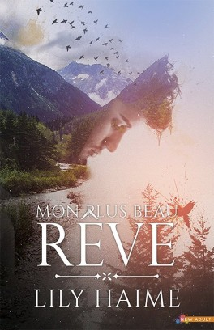

Hello everyone! My name is Tiffany Co (yes just like the brand) and I'm 19yo. I'm currently a 1st year student in ESSEC Business School in the Global BBA program. This blog is about what I love the most: reading, TV, music and sport.
LinkedInHalf of my free time is exclusively for books: romance, action, fantastic, just name it. As long as it's not related with horror or paranormal, I'll read it.
I also spend a lot of time on Netflix watching movies and series. Of course, they are the same kind as my type of books... I like to watch story based or inspired movies like Hidden Figures or Burlesque.
I am passionate about music. I often listen to music such as Disney songs, classical, pop... I'm no stranger to singing A Million Dreams the week following the release of the Greatest Showman. I also play piano since I'm 7yo. I did a lot of concerts with my class. It was really fun but unfortunately, I stop attending the conservatory when I started highshool.
Part of my time is dedicated to my health. I try to eat well, and, as a complementary, I also do some sport. Back home, I run in a treadmill and do fitness but since I'm at ESSEC, I also started salsa 💃. The class takes place from 7.30pm to sometimes 10pm which should be exhausting and annoying but in the contrary. The students and the teacher are really nice and I always have a wonderful time.